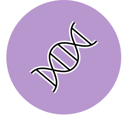

Advanced bioinformatics
GMO4 - Advanced bioinformatics - from genomes to systems

This module introduces students to bioinformatics approaches that can provide a system level understanding of disease associated processes, using a combination of ‘omics’ data types (e.g. genomic, transcriptomic, epigenomic, and proteomic).
This module builds upon the basic bioinformatics techniques introduced in GM7 or GMO7 along with the disease and subject specific knowledge gained in other modules. Students with no prior bioinformatics experience are encouraged to take this module following GM7. This module uses the Unix command line and R to analyse genomic medicine data.
The module is delivered through both lectures and hands-on practical sessions, and employs real data to illustrate the application of systems biomedicine approaches in genomic medicine.
What will I study in this module?
In GMO4 you will learn about:
Principles and practical experience of implementing bioinformatics pipelines for the analysis of genomic data.
Principle of basic programming (e.g. Unix, R) and statistical methodologies needed to carry out analysis of variants
How to use programmes and tools on the Unix command line to go from raw NGS sequence reads to calling variants.
How to use Jupyter notebooks for bioinformatics applications
Proteomics data, with a particular focus on protein-protein interaction networks
Genetic interaction networks
Methods and tools for network analysis and disease network re-construction
Mathematical modelling approaches for integrating different data sources and understanding the deregulation of signalling networks in diseases
Clinical use cases relating to the disease areas covered in previous modules e.g. cancer, infectious diseases.
What will I be able to achieve at the end?
By the end of this module students will be able to:
Discuss the challenges, promises and pitfalls of moving from genome to whole systems analyses
Access and handle appropriately a range of biological data types
Implement analysis pipelines and perform basic statistical analysis
Employ basic tools for network analysis, network visualisation and mathematical modelling of biological processes
Critically analyse use cases where system approaches have been used to provide new insights into disease associated processes, across a range of disease areas
Preserved from https://www.genomics.cam/modules/advanced-bioinfomatics on 10 September 2026. Linked external services may require internet access. The original source snapshot is included with the migration files.